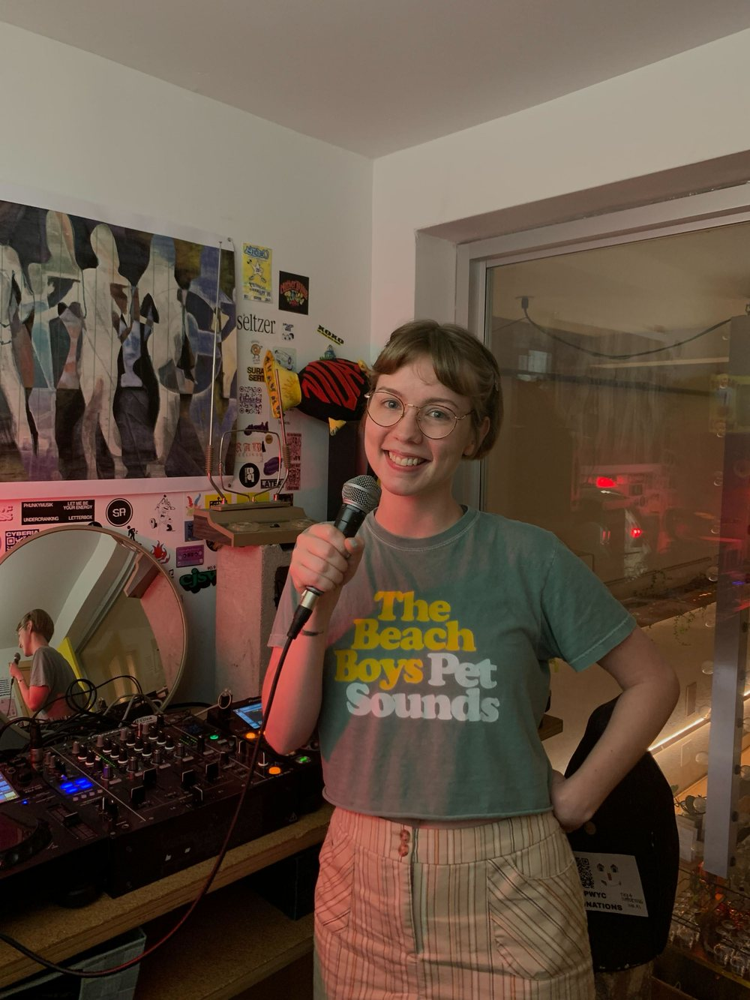

I’m a marketer and writer who likes trying new things, then checking the numbers to see if they worked.

On the mic at the radio show
Part analyst, part storyteller
I live in Pennsylvania and work remotely as an email and SMS marketing specialist and copywriter for a music technology company. Before that, I spent a long time in Montreal, where I studied English and Cultural Studies at McGill and worked in social media and freelance writing.
I like work where creativity and numbers meet: writing the email, then reading the results; building a bot to do the tedious part of outreach; testing two versions of a message to see which one people actually answer.
Wiltbarn Wadio
I host an internet radio show on n10.as. It airs the first Friday of every month, 8 to 9 p.m. Eastern, and past shows are archived online.